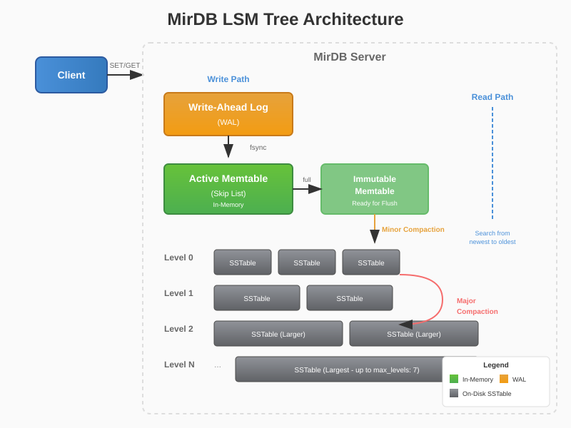

Core Features
Memcached Protocol Support
Full compatibility with the Memcached protocol allows seamless integration with existing clients and tools. Use any memcached client library to connect to MirDB.
Durability with SSTables
Data is persisted to disk using Sorted String Tables (SSTables), ensuring your data survives restarts and crashes with configurable durability guarantees.
LSM Tree Architecture
Log-Structured Merge Tree architecture provides optimal write performance with efficient compaction strategies, including minor and major compaction support.
High-Performance Rust Implementation
Built with Rust for memory safety and performance. Leverages Tokio for async networking and provides zero-copy operations where possible.
Quick Start
Get MirDB running in minutes. Install via Cargo and start storing key-value pairs using the familiar Memcached protocol.
1. Install MirDB
cargo install mirdb2. Start the Server
mirdb-server --addr 0.0.0.0:12333 --dir /tmp/mirdb4. Store and Retrieve Data
Use standard Memcached protocol commands:
# Store a value
set mykey 0 0 5
hello
STORED
# Retrieve the value
get mykey
VALUE mykey 0 5
hello
ENDFeature Roadmap
Track our progress and see what's coming next for MirDB.
Architecture Overview
MirDB implements an LSM Tree (Log-Structured Merge Tree) architecture, a design pattern optimized for write-heavy workloads while maintaining efficient read performance. This page explains the core components that make MirDB a reliable and performant persistent key-value store.
How MirDB Works

The diagram above illustrates the data flow in MirDB. When a write operation arrives, it follows a carefully designed path that balances performance with durability.
Memtables
A memtable is an in-memory data structure that serves as the first destination for all write operations. When you issue a set command to MirDB, the key-value pair is immediately written to the active memtable.
Key characteristics of memtables in MirDB:
- Fast writes: All writes go directly to memory, providing sub-millisecond latency
- Sorted storage: Keys are maintained in sorted order for efficient range queries
- Size-limited: When a memtable reaches
memtable_max_size(default 4MB), it becomes immutable and a new active memtable is created - Flushing: Immutable memtables are asynchronously flushed to disk as SSTables
The memtable acts as a write buffer, batching multiple operations before persisting them to disk. This amortizes the cost of disk I/O across many operations.
Skip Lists
MirDB implements memtables using a skip list data structure. A skip list is a probabilistic data structure that provides O(log n) search, insert, and delete operations.
Why skip lists?
- Lock-free reads: Multiple readers can traverse the skip list concurrently without blocking
- Simple implementation: Compared to balanced trees, skip lists are easier to implement correctly
- Cache-friendly: Sequential memory access patterns improve CPU cache utilization
- Probabilistic balancing: No complex rebalancing operations required during insertions
The skip list maintains multiple levels of linked lists. The bottom level contains all elements, while higher levels contain a subset of elements, creating "express lanes" for faster traversal.
Level 3: ─────────────────────────────────────────▶ [M]
Level 2: ─────────▶ [D] ─────────────▶ [K] ──────▶ [M]
Level 1: ──▶ [B] ──▶ [D] ──▶ [G] ──▶ [K] ──▶ [L] ▶ [M]
Level 0: [A]─[B]─[C]─[D]─[E]─[F]─[G]─[H]─[I]─[J]─[K]─[L]─[M]
SSTables
Sorted String Tables (SSTables) are immutable, on-disk files that store key-value pairs in sorted order. When a memtable is flushed, it becomes an SSTable.
SSTable structure in MirDB:
- Data blocks: Key-value pairs grouped into 4KB blocks (configurable via
block_size) - Index block: Sparse index pointing to data block locations
- Bloom filter: Probabilistic structure for quick key existence checks
- Maximum size: Configurable via
sstable_max_size(default 100MB)
Benefits of SSTables:
- Immutability: Once written, SSTables never change, simplifying concurrency
- Sequential writes: Data is written sequentially, maximizing disk throughput
- Efficient reads: Sorted order enables binary search within blocks
- Compression-friendly: Sorted, immutable data compresses well
Write-Ahead Log (WAL)
The Write-Ahead Log (WAL) is MirDB's durability mechanism. Before any write is acknowledged to the client, it is first persisted to the WAL.
WAL characteristics:
- Sequential writes: All operations are appended to a single file
- Durability guarantee: Data in WAL survives process crashes
- Recovery: On startup, MirDB replays the WAL to restore memtable state
- Truncation: WAL entries are removed after corresponding memtable flushes
The WAL follows a simple principle: "write first, then execute." This ensures that no acknowledged write is ever lost, even in the event of sudden power loss or system crashes.
1. Client sends SET key value
2. MirDB appends operation to WAL
3. WAL write synced to disk (fsync)
4. Operation applied to memtable
5. Success returned to client
Compaction
Compaction is the background process that merges and reorganizes SSTables to maintain read performance and reclaim space from deleted or overwritten keys.
MirDB supports two types of compaction:
Minor Compaction
Minor compaction flushes an immutable memtable to a new SSTable at Level 0 of the LSM tree. This process:
- Creates a new SSTable from memtable contents
- Adds the SSTable to Level 0
- Clears the immutable memtable from memory
- Truncates corresponding WAL entries
Major Compaction
Major compaction merges multiple SSTables across levels to reduce read amplification and reclaim space:
- Leveled structure: MirDB organizes SSTables into levels (up to
max_levels, default 7) - Size ratios: Each level can hold ~10x more data than the previous
- Merge process: Overlapping SSTables are merged, keeping only the latest version of each key
- Deletion handling: Tombstones (deletion markers) are propagated or removed
Compaction is crucial for long-term performance:
- Read performance: Fewer SSTables to search means faster reads
- Space reclamation: Old versions and deleted keys are removed
- Write amplification tradeoff: Rewriting data multiple times vs. query efficiency
Configuration Reference
MirDB can be configured using a TOML configuration file. This page documents all available configuration parameters, their default values, and descriptions to help you tune MirDB for your specific workload.
Using Configuration Files
Start MirDB with a custom configuration file:
mirdb -c /path/to/config.toml
If no configuration file is specified, MirDB uses default values for all parameters.
Configuration Parameters
The following table lists all configurable parameters in MirDB:
| Parameter | Default Value | Description |
|---|---|---|
| listen_addr | 0.0.0.0:12333 | Server listening address and port for client connections |
| max_levels | 7 | Maximum number of LSM tree levels for organizing SSTables |
| work_dir | /tmp/mirdb | Working directory for data storage, WAL files, and SSTables |
| sstable_max_size | 100MB | Maximum size per SSTable file before splitting |
| memtable_max_size | 4MB | Maximum memtable size before flushing to disk |
| block_size | 4KB | SSTable data block size for read/write operations |
Example Configuration
Here is a complete example configuration file:
# Network Configuration
addr = "0.0.0.0:12333"
# LSM Tree Configuration
max_level = 7
work_dir = "/var/lib/mirdb"
# SSTable Settings
sst_max_size = "100M"
block_size = "4K"
# Memtable Settings
mem_table_max_size = "4M"
mem_table_max_height = 32
imm_mem_table_max_count = 16
# Compaction Settings
l0_compaction_trigger = 4
block_restart_interval = 16
thread_sleep_ms = 500
Size Units
Configuration supports the following size suffixes:
- K - Kilobytes (1024 bytes)
- M - Megabytes (1024 KB)
- G - Gigabytes (1024 MB)
- T - Terabytes (1024 GB)